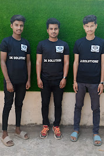
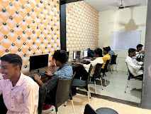
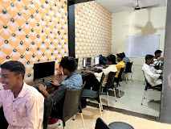
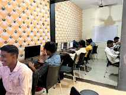
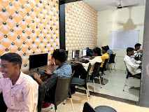

Gallery

 


At 2K Solutions, we believe that education is the cornerstone of personal and professional growth. Our journey began with a simple yet powerful idea: to address the challenges faced by students in navigating their academic paths and preparing for their future careers.
We started as a small initiative dedicated to solving education problems that many students face—lack of access to quality resources, unclear career guidance, and the widening gap between college curricula and industry demands. Observing the struggles of students trying to excel academically while simultaneously preparing for the job market, we realized the need for a bridge—a solution that empowers students with the knowledge, skills, and confidence to succeed in both realms.
Our mission is twofold:
